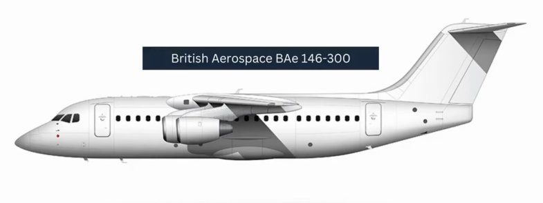
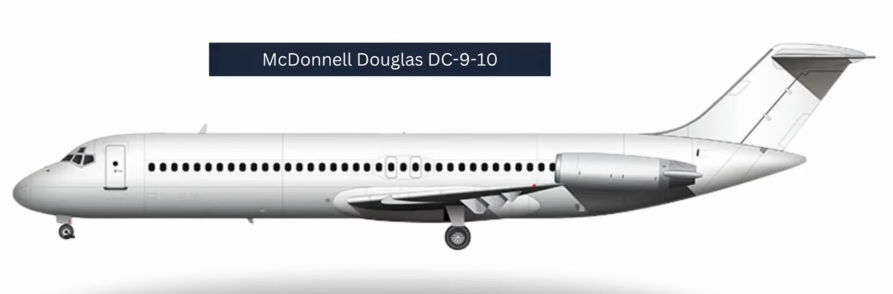
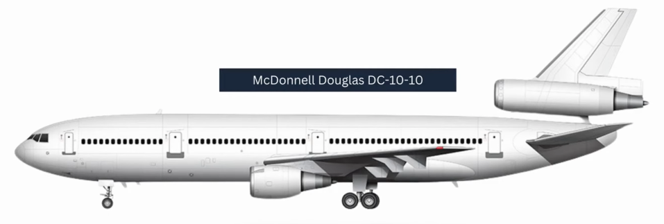
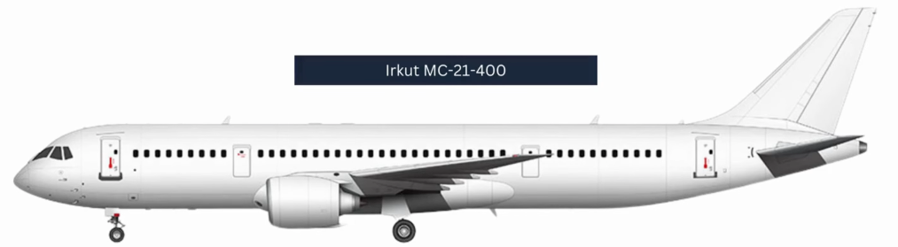
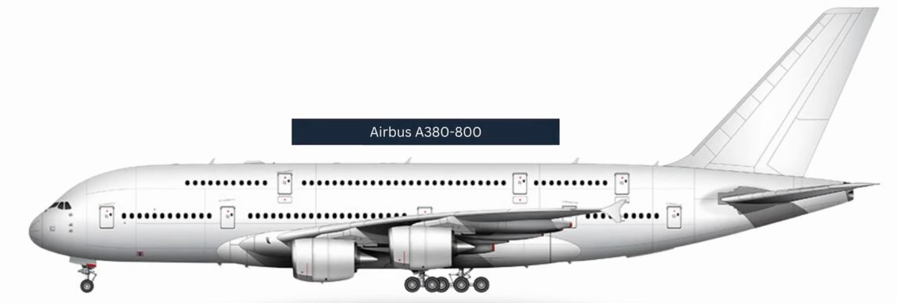

Summary
5. British Aerospace BAE 146-400

Technical Specifications:
- Cost: $527,912
- Capacity: 112 pax
- Runway Requirement: 3,921 feet
- Fuel Consumption: 17.67 lbs/km
4. McDonnell Douglas DC-9-10

Technical Specifications:
- Cost: $659,657
- Capacity: 90 pax
- Runway Requirement: 2,000 feet
- Fuel Consumption: 13.44 lbs/km
- Range: 2,036 km
3. McDonnell Douglas DC-10-10

Technical Specifications:
- Cost: $6,806,411
- Capacity: 250 pax
- Runway Requirement: 2,000 feet
- Fuel Consumption: 20.33 lbs/km
- Range: 6,436 km
2. Irkut MC-21-400

Technical Specifications:
- Cost: $5,204,503
- Capacity: 230 pax
- Runway Requirement: 6,800 feet
- Fuel Consumption: 19.57 lbs/km
- Range: 5,500 km
- Cruise Speed: 1,069 kph
1. Airbus A380-800

Technical Specifications:
- Cost: $215,629,503
- Capacity: 600 pax
- Runway Requirement: 9,680 feet
- Fuel Consumption: 22.89 lbs/km
- Range: 14,500 km
By following these tips, you can enhance your airline manager experience.